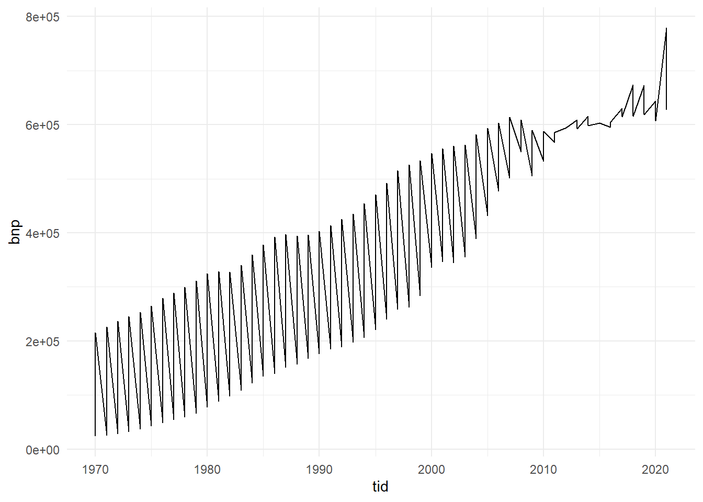
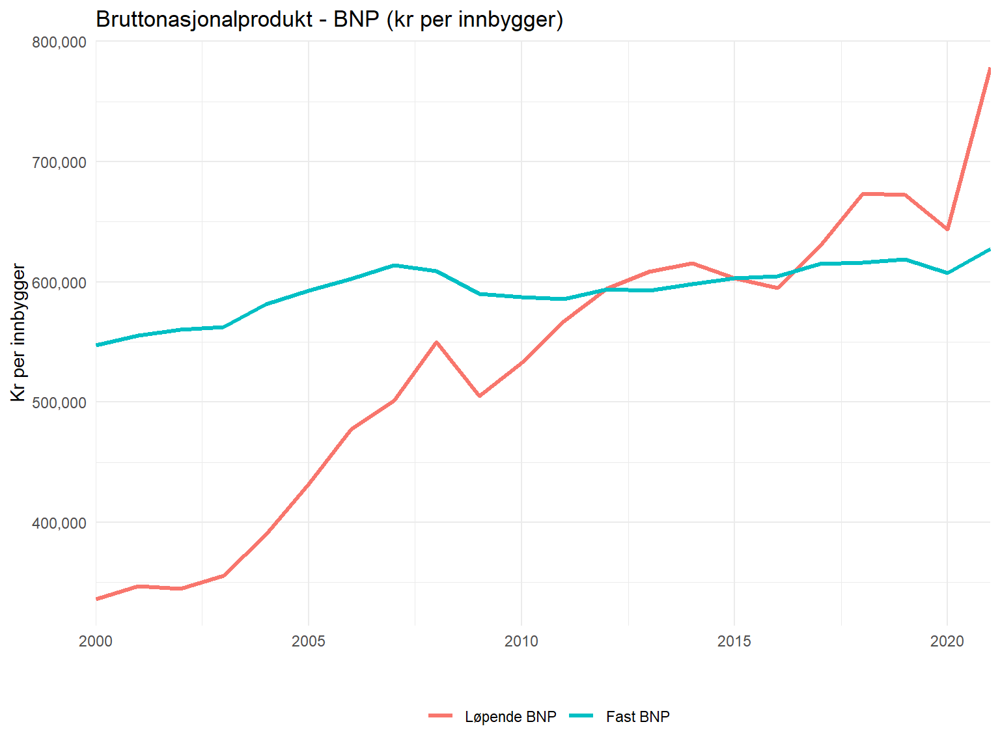
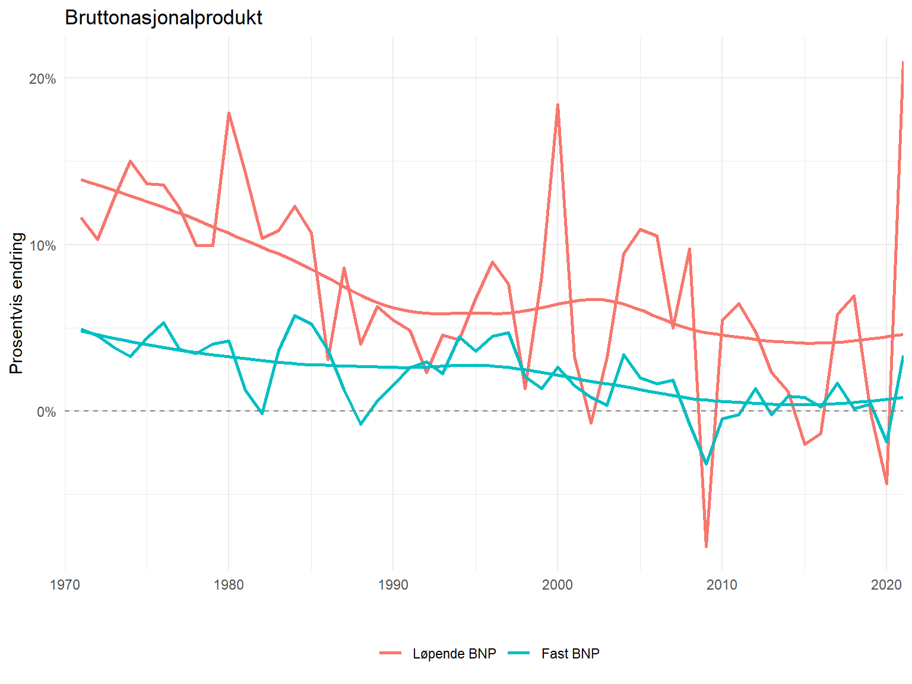

Code
rm(list=ls())
library(tidyverse)
library(PxWebApiData)Denne oppgaven er tilpasset fra Case 1, skrevet av Øystein Myrland for kurset SOK-1004, høsten 2021. Eventuelle feil og mangler er mine egne. Rett spørsmål og kommentarer til even.c.hvinden@uit.no.
Denne oppgaven skal løses interaktivt i RStudio ved å legge inn egen kode og kommentarer. Det ferdige dokumentet lagres med kandidatnummeret som navn [kandidatnummer]_SOK1004_C1_H22.qmd og lastes opp på deres GitHub-side. Hvis du har kandidatnummer 43, så vil filen hete 43_SOK1004_C1_H22.qmd. Påse at koden kjører og at dere kan eksportere besvarelsen til pdf. Dere leverer lenken til GitHub-repositoriumet i Canvas.
Vi skal analysere utviklingen i bruttonasjonalprodukt (BNP) per person i Norge. Vi bruker data Statistisk Sentralbyrå (SSB), tabell “09842: BNP og andre hovedstørrelser (kr per innbygger), etter statistikkvariabel og år”. Tabellen inneholder årlige data på BNP per innbygger, fra 1970 til 2021.
SSB gir oss tilgang til sine data via en API (Application Programming Interface), programvare som lar to applikasjoner kommunisere med hverandre. SSB tilbyr en API med ferdige datasett. Her er det om lag 250 kontinuerlig oppdaterte datasett med en fast URL over de mest brukte tabellene i Statistikkbanken.
For å få tilgang til tabellen med bruttonasjonalprodukt må vi benytte tjenesten PxWebApi. Her finner du en API konsoll med en søkefunksjon. Prøv å søk på “bnp” og merk forslaget: tabell 09842. Søk på denne, og noter URL-en. Den vil vi bruke etterpå.
Til å laste ned dataene skal vi bruke en R-pakke, PxWebApiData, som SSB har laget. I første omgang skal vi bruke funksjonen ApiData(). Syntaksen er ikke den samme som i tidyverse, og har noen litt uvante egenskaper, herunder lagring i tegnformat og en kombinasjon av norsk og engelsk.
Tips: Det er typisk instruktivt å se på eksempel på bruk. Da har man et intuitivt utgangspunkt for hvordan koden kan brukes.
Jeg vil nå vise dere trinnvis hvordan å laste ned dataene. Formålet er å gi dere en idé på hvordan man kan lære seg å bruke en ny pakke eller funksjon. Vi begynner med å laste inn nødvendige pakker:
rm(list=ls())
library(tidyverse)
library(PxWebApiData)NB! Du må installere PxWebApiData først. Kjør kommandoen install.packages("PxWebApiData") i konsollen. Det må kun gjøres én gang.
Vi bruker funksjonen ApiData() til å hente tabell 09842. Som notert ovenfor fant vi URL-en ved hjelp av søkefunksjonen til SSB. Først prøver vi å laste ned dataene direkte, uten ytterligere tilvalg, og tar en titt på hva vi får.
lenke <- "http://data.ssb.no/api/v0/no/table/09842"
df <- lenke %>%
ApiData()
df %>%
print()$`09842: BNP og andre hovedstørrelser (kr per innbygger), etter statistikkvariabel og år`
statistikkvariabel år value
1 Bruttonasjonalprodukt 1970 23616
2 Bruttonasjonalprodukt 2021 778730
3 Bruttonasjonalprodukt 2022 1020805
4 Konsum i husholdninger og ideelle organisasjoner 1970 12283
5 Konsum i husholdninger og ideelle organisasjoner 2021 298958
6 Konsum i husholdninger og ideelle organisasjoner 2022 331008
7 MEMO: Bruttonasjonalprodukt. Faste 2015-priser 1970 215602
8 MEMO: Bruttonasjonalprodukt. Faste 2015-priser 2021 627433
9 MEMO: Bruttonasjonalprodukt. Faste 2015-priser 2022 642200
$dataset
ContentsCode Tid value
1 BNP 1970 23616
2 BNP 2021 778730
3 BNP 2022 1020805
4 KonsumHIO 1970 12283
5 KonsumHIO 2021 298958
6 KonsumHIO 2022 331008
7 MEMOBNP 1970 215602
8 MEMOBNP 2021 627433
9 MEMOBNP 2022 642200Merk følgende: df inneholder to datasett i formatet data.frame. Datasettene heter "09842: BNP og andre hovedstørrelser (kr per innbygger), etter statistikkvariabel og år" og dataset. Datasettene inneholder 9 verdier av 3 variabler. Variabelen value er identisk. Variablene år og Tid inneholder de identiske verdiene "1970", "2020" og "2020". Merk at disse er i tegnformat <chr> (derav anførselstegnene) og ikke en numerisk verdi, for eksempel <dbl>. Variabelen statistikkvariabel og ContentsCode inneholder henholdsvis verdiene BNP, KonsumHIO MEMOBNP og Bruttonasjonalprodukt, Konsum i husholdninger og ideelle organisasjoner og MEMO: Bruttonasjonalprodukt. Faste 2015-priser.
Vi har altså ikke fått hele tabell 09842, men verdiene for tre statistikkvariabler over tre tidsperioder, lagret med forskjellige variabelnavn og verdier.
Det vi trenger er metadata: Informasjon som beskriver innholdet i dataene, slik at vi kan filtrere API-spørringen. Kjør følgende kode.
metadata <- lenke %>%
ApiData(returnMetaData = TRUE)Åpner vi listen metadata fra minnet så kan vi se nærmere på den i øvre venstre vindu i Rstudio. Her ser vi to lister kalt [[1]] og [[2]]. Listene beskriver variablene vi kan filtrere på. Liste [[1]] har fire variable: code, text, values, og valueTexts. Alle variablene er <chr>. Liste [[2]] har de samme foregående fire variablene samt en variabel time.
code viser navnene på variablene vi bruker i funksjonen ApiData() for å filtrere. Den tar verdiene ContentsCode og Tid. Legg merke til at utviklerne i SSB her blander norsk og engelsk.
text er en unik tekstverdi tilknyttet verdien på code som forklarer hva vi ser på. Den tar verdien statistikkvariabel og år. Vi kan altså filtrere på statistikkvariabel og år.
values viser hvilke verdier av statistikkvariabel og år vi kan velge, med henholdsvis 6 og 52 forskjellige verdier. Du vil kjenne igjen tre av hver fra den første spørringen ovenfor.
valueTexts gir en unik tekstverdi tilknyttet verdien på values som forklarer oss hva vi ser på. For Tid og år er de identiske, men for ContentsCode og statistikkvariabel får vi en mer fullstendig forklaring.
time er en logisk variabel, og tar derfor to verdier: TRUE og FALSE. I dette tilfellet indikerer den at variabelen Tid måler tid, hvilket gjør at funksjonene i pakken vil behandle Tid på en annen måte enn en statistikkvariabel.
Vi har nå informasjonen vi trenger til å laste ned BNP-tall mellom 1970 og 2021. Jeg velger å ta BNP med både løpende og faste priser.
df <- lenke %>%
ApiData(Tid = paste(1970:2021), ContentsCode = c("BNP","MEMOBNP"))På venstre side av likhetstegnet bruker vi code fra metadata. På høyre side velger vi verdier fra values. Merk at jeg bruker funksjonen paste() for å konvertere numeriske verdier, for eksempel <dbl> til tegn <chr>.
La oss rydde i data. Det er tre ting å ta tak i:
df lagrer informasjonen i to tabeller med samme informasjon, som vist over. Det er unødvendig.
Årstallene er lagret som tegn, <chr>. Disse skulle heller være heltall, <int>.
Formatet data.frame er underlegent tibble.
Skriv kode som lagrer dataene som én tibble med anstendige variabelnavn og årstall som heltall. Fremover bruker jeg “var”, “tid”, og “verdi” for “statistikkvariabel”, “Tid”, og “value”.
# Her henter jeg ut en av listene, gjør om fra chr til int og skifter navn
bnp_df <- as_tibble(df[[2]]) %>%
mutate(Tid = parse_number(Tid)) %>%
rename(bnp = value) %>%
rename(var = ContentsCode) %>%
rename(tid = Tid)
rm(df, metadata)Følgende kode skaper en enkel figur.
bnp_df %>%
ggplot(aes(x=tid, y=bnp))+
geom_line()+
theme_minimal()
Lag en pen figur som viser BNP i tusener av kroner per person, i både løpende og faste priser, mellom 2000 og 2021. Skriv en tydelig forklaring og tolkning av figuren. Hvordan har inntektene utviklet seg? Forklar forskjellen mellom BNP i løpende og faste priser. Til hvilke formål er de mest relevante?
bnp_df %>%
filter(tid >= 2000) %>%
ggplot(aes(x = tid, y = bnp, color = var)) +
geom_line(linewidth = 1.1) +
scale_x_continuous(limits=c(2000, 2021),
expand=c(0,0))+
scale_y_continuous(labels = scales::comma) +
theme_minimal() +
labs(y = "Kr per innbygger",
title = "Bruttonasjonalprodukt - BNP (kr per innbygger)",
x = "", color = "") +
theme(legend.position = "bottom")+
scale_color_discrete(labels = c('Løpende BNP', 'Fast BNP'))
Løpende BNP (også kjent som nominell BNP) er verdien av et lands produksjon av varer og tjenester målt i faktiske priser for det pågjeldende året. Den tar ikke hensyn til inflasjon eller endringer i pengeverdien.
Reell BNP (også kjent som BNP i faste priser) er verdien av et lands produksjon av varer og tjenester justert for inflasjon eller deflasjon. Dette betyr at den tar hensyn til prisendringer over tid, slik at man kan se den virkelige økonomiske veksten eller tilbakegangen.
Inflasjon er en generell økning i prisnivået på varer og tjenester over tid, noe som fører til at pengenes kjøpekraft avtar. Deflasjon er det motsatte, hvor prisnivået generelt faller.
Reell BNP er ansett som en bedre indikator på økonomisk vekst fordi den utelukker effekten av inflasjon/deflasjon, og gir dermed et mer nøyaktig bilde av økonomiens faktiske utvikling.
Løpende BNP er nyttig for sammenligning av økonomier på dagens prisnivå, men det kan være vanskelig å identifisere den virkelige økonomiske veksten på grunn av inflasjonens innvirkning.
I sum brukes både løpende BNP og reell BNP for å gi forskjellige perspektiver på en økonomis ytelse og utvikling. Reell BNP er spesielt viktig når man ønsker å forstå den underliggende økonomiske veksten, justert for inflasjonens påvirkning. Løpende BNP kan være nyttig for sammenligning av økonomier i en gitt periode, men det er viktig å ta hensyn til inflasjonen når man tolker tallene for å få et mer nøyaktig bilde.
(Oppsummert versjon av min forrige tekst via AI)
Våre data er en tidsserie, hvilket betyr at rekkefølgen i observasjonene er ordnet etter tid. Vi skal nå regne prosentvis, årlig endring. La \(x_t\) være BNP i år \(t\). For eksempel vil \(x_{1970}\) være \(23616\).
Den årlige endringen i BNP fra år \(t-1\) til \(t\) er gitt ved \(x_{t}-x_{t-1}\). I samfunnsøkonomi er det vanlig å betegne dette som \(\Delta x_{t} := x_{t}-x_{t-1}\). Tegnet \(\Delta\) er den greske bokstaven delta og betegner differanse. For eksempel vil \(\Delta x_{1971}=26363-23616=2747\) kroner.
I mange tilfeller er vi interesserte i relativ vekst: Hvor mye økte BNP, relativt til hva den var i utgangspunkt? Den mest brukte enheten er hundredeler eller prosentvis endring, gitt ved \(100 \times \Delta x_{t}/x_{t-1}\). For eksempel var den prosentvise endringen i BNP i 1971 \(100 \times \Delta x_{1971}/x_{1970}=100\times(2747/23616)\approx11.6\), hvor \(\approx\) betegner “omtrent lik” da jeg viser svaret med kun én desimal. Tilsvarende kan man skrive at \(\Delta x_{1971}/x_{1970}=2747/23616\approx0.116=11.6\%\), hvor tegnet \(\%\) betegner at beløpet oppgis i hundredeler eller prosent.
pivot_wider()Vi skal lage to variable dBNP og dMEMOBNP som viser relativ endring i BNP og MEMOBNP. Til dette formålet skal vi bruke kommandoene pivot_wide() og pivot_long() til å omorganisere dataene. Jeg anbefaler dere først å lese kapittel 12.3 i pensum. Betrakt følgende kode.
df_wide <- bnp_df %>%
pivot_wider(names_from = var, values_from = bnp) Beskriv konkret hva koden gjorde. Sammenlign df og df_wide.
Koden gjør sånn at den lange variabelen “var” blir vid eller “wide”. Den omorganiserer dataen sånn at BNP og MEMOBNP går ut av radene og blir plassert i to forskjellige kolonner med den tilhørende dataen presentert under seg i sine egne variabler.
Til å beregne endring er funksjonen lag() meget nyttig. I denne konteksten er begrepet lag et engelsk verb som beskriver foregående observasjon. Bruker vi funksjoenen lag() på en variabel (kolonne) så returnerer den en ny kolonne hvor verdien er lik foregående observasjon. Betrakt følgende kode:
df_wide <- df_wide %>%
mutate(LBNP = lag(BNP,n=1L)) %>%
mutate(LMEMOBNP = lag(MEMOBNP,n=1L))
# legger variablene i rekkefølge
head(df_wide) %>%
relocate("LBNP", .before = "MEMOBNP")| tid | BNP | LBNP | MEMOBNP | LMEMOBNP |
|---|---|---|---|---|
| 1970 | 23616 | NA | 215602 | NA |
| 1971 | 26363 | 23616 | 226242 | 215602 |
| 1972 | 29078 | 26363 | 236487 | 226242 |
| 1973 | 32805 | 29078 | 245483 | 236487 |
| 1974 | 37734 | 32805 | 253534 | 245483 |
| 1975 | 42884 | 37734 | 264625 | 253534 |
Hvis vi bruker den matematiske notasjonen diskutert tidligere så har vi nå kolonner med \(x_{t}\) (BNP, MEMOBNP) og \(x_{t-1}\) (LBNP, LMEMOBNP).
Bruk funksjonen mutate() til å lage en ny variabel med relativ endring i BNP og MEMOBNP i df_wide og lagre de som DBNP og DMEMOBNP.
df_wide <- df_wide %>%
mutate(DBNP = BNP - LBNP,
DMEMOBNP = MEMOBNP - LMEMOBNP,
prosBNP = 100 * (BNP - lag(BNP)) / lag(BNP),
prosRBNP = 100 * (MEMOBNP - lag(MEMOBNP)) / lag(MEMOBNP))pivot_longer()Bruk nå funksjonen pivot_longer() til å transformere df_wide til det opprinnelige formatet, altså med variablene var og verdi. Kall den transformerte tabellen for df_long.
NB! Husk å bruk anførselstegn ("[variabelnavn]") når du definerer nye variable i pivot_longer().
df_long <- df_wide %>%
drop_na() %>%
select(tid, prosBNP, prosRBNP) %>%
pivot_longer(cols = c(prosBNP, prosRBNP), names_to = "var", values_to = "bnp", names_prefix = "pros")Lag en pen figur med prosentvis vekst i nominelt og reelt BNP per person fra 1970 til 2021. Finnes det observasjoner med negativ vekst i reell BNP? Hva skyldes dette?
Merknad: Det er en del støy i data. Prøv å kombinere geom_point() og geom_smooth() for å få et bedre inntrykk av den langsiktige utviklingen.
df_long %>%
ggplot(aes(x = tid, y = bnp, color = var)) +
geom_line(linewidth = 1) +
geom_smooth()+
scale_x_continuous(limits = c(1970, 2021), expand = c(0, 0))+
scale_y_continuous(labels = scales::percent_format(scale = 1))+
theme_minimal()+
labs(
y = "Prosentvis endring",
title = "Bruttonasjonalprodukt",
x = "",
color = ""
) +
theme(legend.position = "bottom") +
scale_color_discrete(labels = c('Løpende BNP', 'Fast BNP'))+
geom_hline(yintercept = 0, linetype = "dashed", color = "gray50")
Merknad fra meg selv: Geom_smooth ser ikke bra ut på figuren men inkluderer det fordi Even ville ha det med.